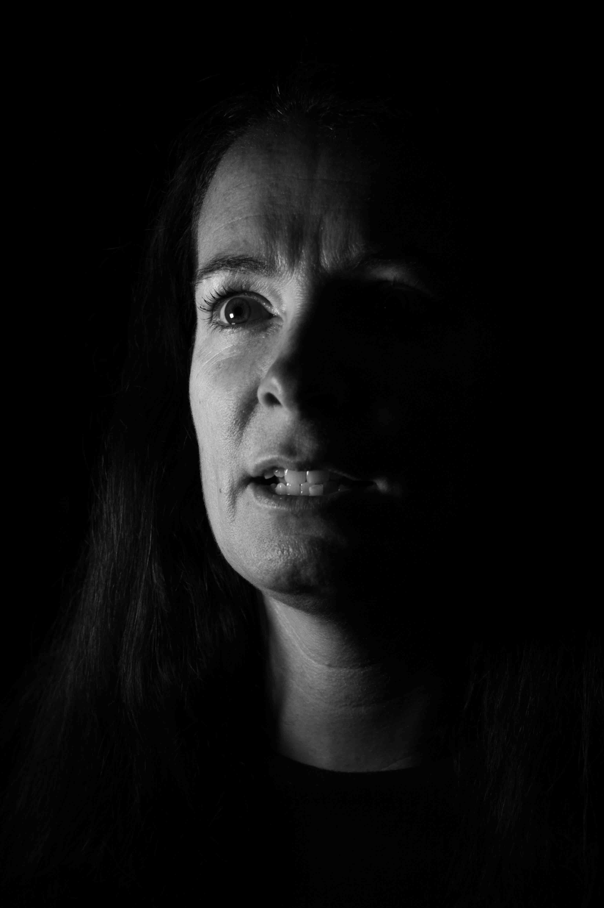
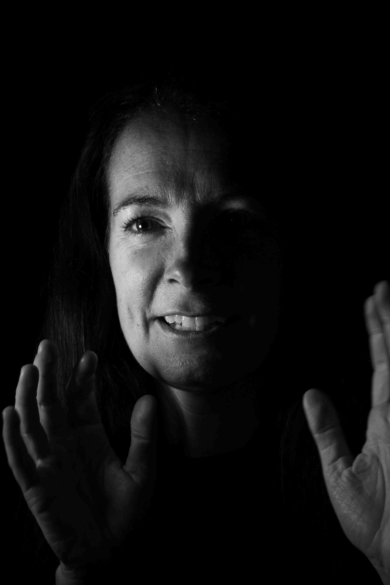

Listen to this page:
Fedra is a sustainability researcher working to highlight pathways to reach the sustainable development goals.
"Annoyed"

Her positivity is infectious and she has a clear energy driving her forwards. She tells me that she is annoyed that although we know what needs to be done to improve the planet and make society more sustainable we’re not doing it: “how hard is it?” she says, incredulous.
"Brave"

She also tells me that she feels we have to be brave. “We need to do stuff and not just keep talking”, she says, “and we have to call it out when people are spinning a story that isn’t correct”. She is clearly driven to work hard in an effort to protect what we have left. She tells me that she feels it isn’t too late: “It’s not all f*cked yet”, a reference to a song that has deep emotional meaning for her. It’s clear that she believes this, but more than that – she lives it.
"Compassionate"

Compassion is something she also feels we need, since climate change won’t affect everyone equally. She also believes that she is extraordinarily lucky to have been born in a rich nation: “we have to be compassionate with those who don’t have the ability or power to choose”.
When I ask if she feels hope for the future her reply comes quickly: “yes, I do!” She tells me the lyrics of the song that means so much to her: #people still marry more than they divorce, they sill laugh more than they grieve#. “Ultimately”, she says, “I believe people will pull through – I have huge faith that they will”.

Visit the project website